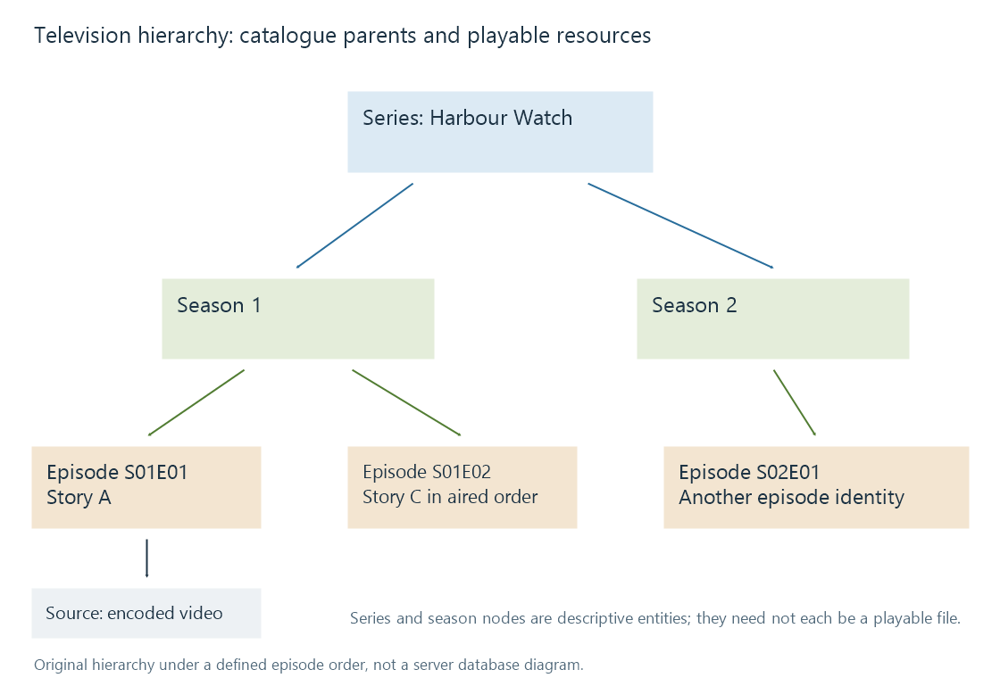

Series, seasons and episodes
A series hierarchy organizes episodic media by parent series and season while retaining each episode’s identity and playable resources.
A television library needs to know both which show an episode belongs to and where it fits within that show's chosen arrangement. The usual series → season → episode hierarchy supplies that context.
The hierarchy describes catalogue entities. The episode's actual media is another layer: one episode may have several encodes, and one file may contain several episodes.

The number is qualified by its parents
S01E02 identifies a position within a season and series arrangement. Thousands of shows have that coordinate. It is not a global episode identifier.
| Entity | Fictional example | Describes |
|---|---|---|
| Series | Harbour Watch (2020) | The show as a whole |
| Season | Season 1 under the chosen order | A grouping of the show's episodes |
| Episode | Season 1, episode 2 | One episode in that arrangement |
| Media source | An MKV encode of that episode | The playable representation |
Even within one series, a coordinate can change meaning under another episode order. The parent series identity resolves which show is meant; the selected order resolves how its seasons and numbers map to episodes.
A show title plus its first-release year helps distinguish similarly named series and reboots. A provider ID supplies a more explicit catalogue match. Neither a familiar title nor the fact that files occupy the same drive establishes the correct series parent.
Folder structure communicates the relationship
A directory layout can make the intended parents clear:
Harbour Watch (2020)/
Season 1/
Harbour Watch S01E01.mkv
Harbour Watch S01E02.mkv
Season 2/
Harbour Watch S02E01.mkv
Emby's TV Naming guide describes recognized structures. A season folder is useful storage evidence, but a season entity and a season directory are not identical concepts. A catalogue can organize by season when the numbering supplies that context, subject to the product's supported library conventions.
That distinction also explains why moving an episode file does not, in itself, change the television work it represents. The scanner must reconcile the path and naming evidence with the entity relationship.
Description belongs at the right level
A series overview introduces the premise. A season overview can describe a particular run or story arc. An episode overview describes that episode's events. A guest actor can appear on one episode without being a regular cast member for every season.
Artwork has the same scopes. The series poster identifies the show; a season poster can identify one run; an episode thumbnail depicts or represents a particular episode. Incorrect parent assignment can therefore produce a credible series poster with the wrong episode synopsis and image below it.
Parent counts also answer different questions. A season with ten catalogued episode descriptions does not necessarily have ten local playable files. One combined resource could cover two episodes, while another described episode could be unavailable.
Specials add a further distinction between catalogue storage and viewing placement. A special can be grouped separately and still belong between two regular episodes in an intended sequence. The hierarchy tells us which entities exist; their ordering and availability determine how a viewer moves through them.